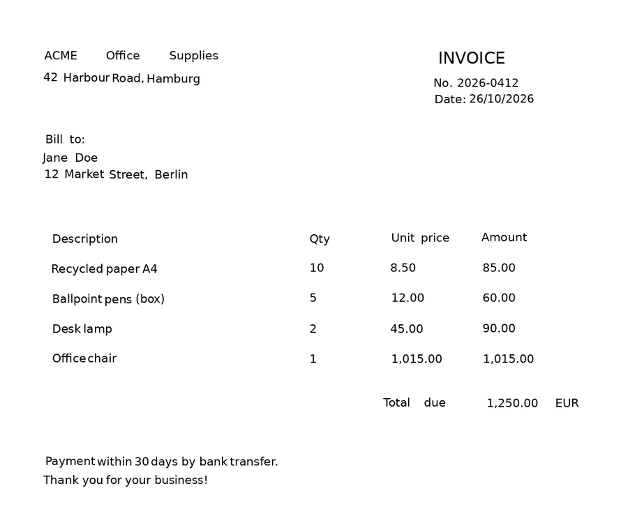

Working with results#
The OCR predictor returns a Document. This page shows how to navigate it, turn its geometries
into pixels, visualize the predictions, and save them for later.
See also
The Document tree introduces the elements of the tree and Exporting results covers the text-oriented export formats (Markdown, HTML, hOCR…).
Filter by confidence#
word.confidence tells how sure the recognition model is. Use it to send doubtful words to a human, or to drop
noise:
doubtful = [(page_idx, word.value, word.confidence) for page_idx, word in iter_words(result) if word.confidence < 0.5]
Tip
The way character probabilities are combined into word.confidence is configurable: see
confidence scores.
Convert coordinates to pixels#
Geometries are relative to the page size, with (0, 0) at the top-left corner. Multiply them by the page
dimensions to get pixels:
import numpy as np
height, width = page.dimensions
(xmin, ymin), (xmax, ymax) = word.geometry
x0, y0 = int(xmin * width), int(ymin * height)
x1, y1 = int(xmax * width), int(ymax * height)
word_image = page.page[y0:y1, x0:x1] # crop the word from the page
With assume_straight_pages=False, geometries are (4, 2) arrays of points:
import numpy as np
height, width = page.dimensions
polygon = np.asarray(word.geometry) * np.array([width, height]) # (4, 2) pixel coordinates
Find a value next to a keyword#
Combining positions and text lets you build simple extraction rules. For instance, to read the amount written to the right of Total:
def value_right_of(page, keyword):
words = [w for block in page.blocks for line in block.lines for w in line.words]
anchor = next(w for w in words if w.value.lower().startswith(keyword.lower()))
(_, ay0), (ax1, ay1) = anchor.geometry
center_y = (ay0 + ay1) / 2
# Words on the same horizontal band, to the right of the keyword, sorted left to right
candidates = [w for w in words if w.geometry[0][1] < center_y < w.geometry[1][1] and w.geometry[0][0] > ax1]
return " ".join(w.value for w in sorted(candidates, key=lambda w: w.geometry[0][0]))
print(value_right_of(result.pages[0], "Total")) # due 1,250.00 EUR
For forms and invoices with many fields, a KIE predictor trained on your fields is more robust than hand-written rules.
Visualize the predictions#
Requires the viz extra. Hover a box to see the word and its confidence:
result.show() # all pages; or result.pages[0].show()
When the layout model ran, its regions are drawn as well (display_layout=False hides them).
visualize_page() returns a Matplotlib figure that you can save, e.g. on a
server without display:
import matplotlib
matplotlib.use("Agg") # no display needed
from doctr.utils.visualization import visualize_page
page = result.pages[0]
fig = visualize_page(page.export(), page.page, interactive=False, add_labels=False)
fig.savefig("predictions.png", bbox_inches="tight")

Rebuild the page from its predictions#
synthesize() draws the recognized words at their position on a blank page. It is a quick
way to eyeball what was read, and where:
import matplotlib.pyplot as plt
synthetic_pages = result.synthesize() # one image per page
plt.imshow(synthetic_pages[0])
plt.axis("off")
plt.show()


Save and reload#
export() converts the result into a nested dictionary of plain Python types, ready for
JSON. from_dict() rebuilds the Document from it:
import json
from doctr.io import Document
# Save
with open("invoice.json", "w") as f:
json.dump(result.export(), f)
# ... later: reload
with open("invoice.json") as f:
restored = Document.from_dict(json.load(f))
print(restored.render())
The page images are not part of the export. Pass them back with Document.from_dict(data, pages=pages) if you
need them, e.g. to call show().
What does the JSON export look like?
{
"pages": [
{
"page_idx": 0,
"dimensions": [1684, 1191],
"orientation": {"value": null, "confidence": null},
"language": {"value": null, "confidence": null},
"blocks": [
{
"geometry": [[0.0706, 0.0537], [0.3992, 0.0732]],
"objectness_score": 0.83,
"lines": [
{
"geometry": [[0.0706, 0.0537], [0.3992, 0.0732]],
"objectness_score": 0.83,
"words": [
{
"value": "ACME",
"confidence": 0.99995,
"geometry": [[0.0706, 0.0537], [0.1603, 0.0713]],
"objectness_score": 0.80,
"crop_orientation": {"value": 0, "confidence": null}
}
]
}
],
"artefacts": []
}
],
"layout": [],
"tables": []
}
]
}